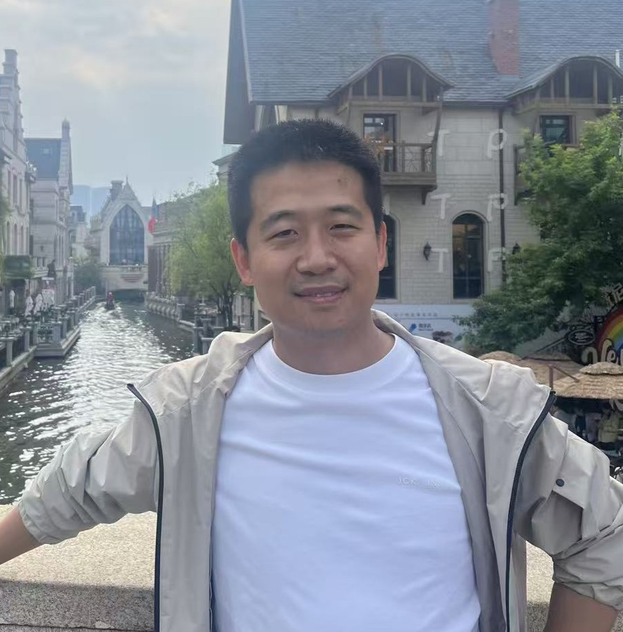
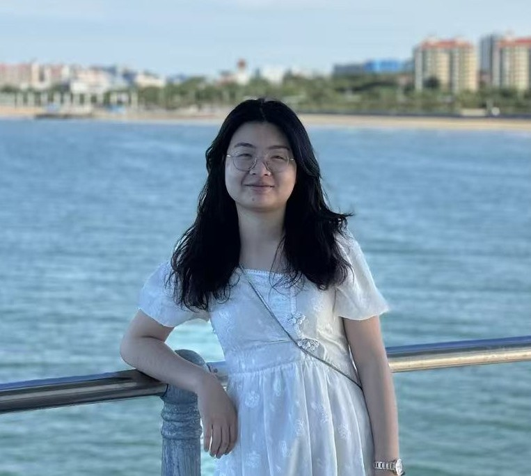
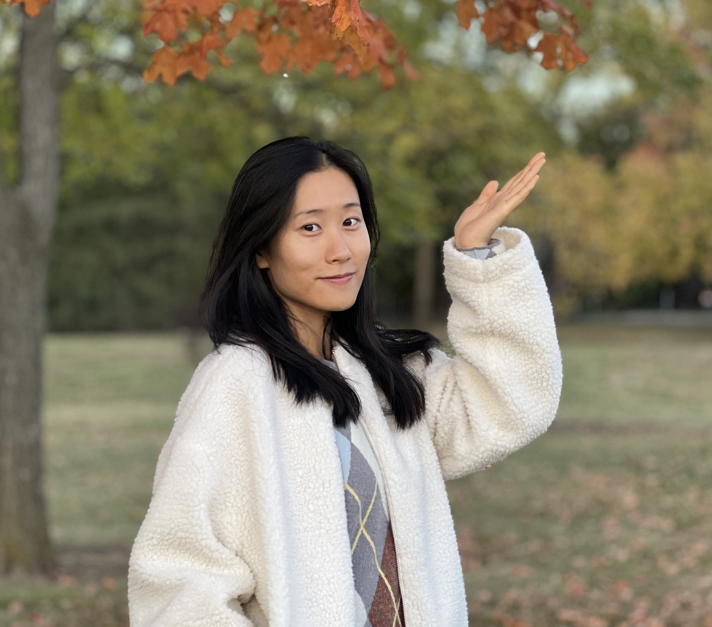
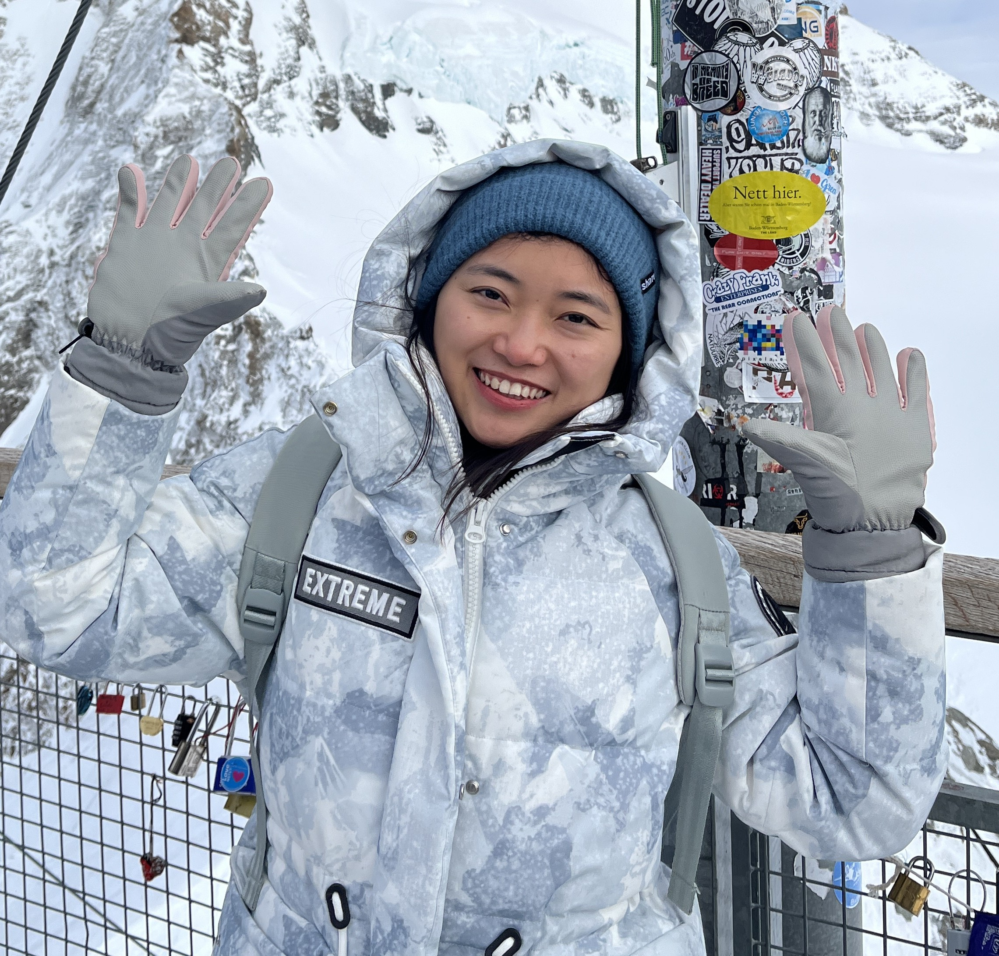
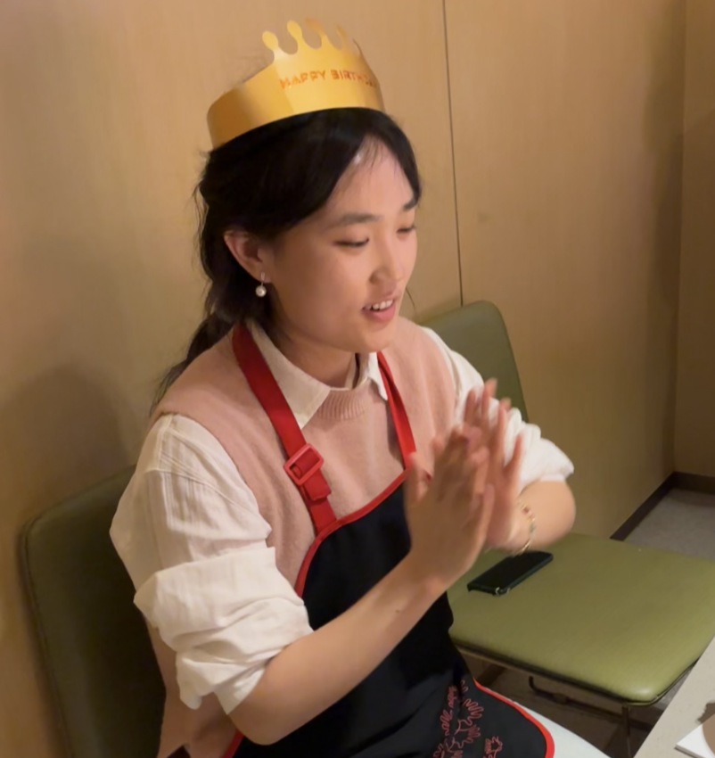

PI

Prof. Yongqiang Zhang
Global and regional hydrology and water resources
Prof. Yongqiang Zhang is a hydrologist specializing in hydrology and water resources. His research focuses on understanding the mechanisms and processes of global evapotranspiration, exploring eco-hydrological processes, and advancing hydrological modeling, prediction, and projection through remote sensing techniques.
Co-PI

Dr. Jing Tian
Ecohydrology
ORCID
Email: tianj.04b@igsnrr.ac.cn
Dr. Jing Tian specializes in remote sensing hydrology, with a focus on the estimation of surface evapotranspiration and soil moisture using remote sensing techniques.

Dr. Xuanzhe Zhang
Land surface modeling; Ecoclimatology
ORCID
Email: xuanzezhang@igsnrr.ac.cn
Dr. Xuanzhe Zhang studies the feedback interactions between the global carbon cycle and climate change. His research focuses on the mechanisms and processes of evapotranspiration, as well as the dynamics and underlying principles of drought events.

Dr. Ning Ma
Hydrological Processes
Dr. Ning Ma focuses on surface hydrological processes, with a particular emphasis on the mechanisms and dynamics of evapotranspiration.

Dr. Xiaojie Li
Agricultural hydrology
Dr. Xiaojie Li specializes in the interactions between agricultural water use and hydrological processes under a changing environment. Her work focuses on the mechanisms and processes of agricultural evapotranspiration, water use efficiency, and hydrological responses to climate change and human activities.
Postdoc

Dr. Yijing Cao
Agricultural hydrology
Dr. Yijing Cao specializes in agricultural hydrology. Her research focuses on understanding the interactions between water cycles and agricultural systems, aiming to optimize water use efficiency and promote sustainable water resource management in agricultural practices.

Dr. Xian Wang
AI for Hydrology
Email: xianwang@igsnrr.ac.cn
Dr. Xian Wang focuses on integrating artificial intelligence with hydrology to enhance the simulation and prediction of hydrological processes.

Dr. Zhen Huang
Hydrological modeling; water resources
Email: huangz.19b@igsnrr.ac.cn
Dr. Zhen Huang focuses on surface and subsurface hydrological modeling, hydrological forecasting, and water resources management. Specifically, his work aims to improve the representation of hydrological processes through integrated surface–subsurface models, explore the impacts of climate and land surface changes on water resources, and develop advanced forecasting frameworks that support water management and decision-making.

Dr. Congcong Li
Water availability
Email: licongcong0825@163.com
Dr. Congcong Li focuses on the study of water storage and the variability of water resource availability. Her research aims to enhance the understanding of changes in water storage dynamics and their implications for sustainable water resource management under evolving environmental conditions.

Dr. Zhenwu Xu
Hydroclimate; Ecohydrology
Website
Email: xuzhenwu@igsnrr.ac.cn
Dr. Zhenwu Xu specializes in hydroclimate extremes. His research focuses on hydrological responses to disturbances caused by droughts, wildfires, and human activities, aiming to advance understanding of the resilience and evolution of Earth's water resources and ecosystems.
Ph.D Students

Haoshan Wei
Ecohydrology
Email: weihs.20b@igsnrr.ac.cn
Haoshan Wei focuses on hydrological modeling, with an emphasis on exploring how CO₂ influences eco-hydrological processes.

Zixuan Tang
Hydrological Extremes; Anthropogenic impacts
Zixuan Tang focuses on anthropogenic impacts (reservoirs and water consumption) on hydrological processes and sub-seasonal to seasonal (S2S) hydrological extreme forecasting.

Xuening Yang
Agricultural hydrology
Xuening Yang focuses on optimizing agricultural water management using crop modeling, researching the water-food-energy nexus in river basins, and the sustainable utilization of agricultural water resources under drought stress.

Longhao Wang
AI for hydrology
Longhao Wang received the B.S. degree from Hohai University, he is currently using AI models to simulate meteorological and hydrological processes, with a focus on coupling physical processes with machine learning for large-scale forecasting.

Jiao Wang
AI for hydrology
ORCID
Email: wangjiao0523@igsnrr.ac.cn
Jiao Wang focuses on integrating deep learning with process-based hydrological modeling to improve the accuracy and physical consistency of runoff prediction, with an emphasis on automatic calibration and regionalized prediction for ungauged basins.

Yizhe Ma
Hydrological Extremes, Evapotranspiration
Yizhe Ma focuses on the eco-hydrological impacts of droughts and evapotranspiration models. His research aims to understand the drought resilience under climate change, providing insights into the hydrological effects of ecosystems' responses to drought.

Wenjie Hou
Remote Sensing Evapotranspiration
ORCID
Email: houwenjie001x@igsnrr.ac.cn
Wenjie Hou dedicates to the simulation of remote sensing evapotranspiration.

Yushi Zheng
Hydrometeorology
Email: zhengyushi25@mails.ucas.ac.cn
Yushi Zheng focuses on atmospheric precipitation forecasting and hydrological simulation.

Daniel Geletaw
Changes in Hydrological regimes
Daniel Geletaw

Yuxuan Xie
Evapotranspiration; Ecohydrology
Website
Email: xieyuxuan0430@igsnrr.ac.cn
Yuxuan Xie focuses on evapotranspiration modeling and ecohydrological models development. His research aims to reveal the response mechanisms of ecohydrological processes to climate change and to deepen our understanding of the underlying principles.
Master Students

Chanyue Ren
Hydrological drought
ORCID
Email: renchanyue@igsnrr.ac.cn
Chanyue Ren focuses on drought propagation and terrestrial water storage (TWS) drought within the broader context of hydrological drought processes.

Shengyu Zou
Remote sensing; Hydrology
GitHub
Email: zoushengyu23@mails.ucas.ac.cn
Shengyu Zou focuses on hydrological modeling based on remote sensing data and 3D reconstruction of hydrological scenes.

Yalin Xie
Ecohydrology
Email: xieyalin0006@igsnrr.ac.cn
Yalin Xie focuses on machine learning–based inversion of soil moisture spatial patterns and implications for drought monitoring.

Yiwen Luo
Evapotranspiration; Ecohydrology
Email: yiwenluo13@163.com
Yiwen Luo focuses on regional and global changes in evapotranspiration, as well as the effects of vegetation changes on water and carbon dynamics over the Tibetan Plateau.

Zhiye Cao
Agricultural hydrology
Email: caozhiye25@mails.ucas.ac.cn
Zhiye Cao focuses on using crop modeling to investigate crop resilience mechanisms under drought stress.

Xudong Zhang
Hydrological model
Email: zhangxudong25@mails.ucas.ac.cn
Xudong Zhang

Qiaoxue Peng
Climate extreme
Email: pengqiaoxue25@mails.ucas.ac.cn
Qiaoxue Peng

Xinhai Wei
Ecohydrology
Email: weixinhai25@mails.ucas.ac.cn
Xinhai Wei focuses on ecohydrology
Research Assistant

Jingyi Fang
Data analysis
Jingyi Fang
Visiting Students

Jiangmeng Li
Ecohydrology
Email: ljiangmeng@163.com
Jiangmeng Li focuses on the effects of vegetation change on the regional water cycle to elucidate the water-ecology coupling mechanisms driven by climate change and human activities.

Liwen Zhang
Lake drought
Email: 18150836878@163.com
Liwen Zhang focuses on the response relationship of lake hydrological elements to the influencing factors of drought in the basin.

Jiayi Ding
Evapotranspiration
Email: djy0714@nwafu.edu.cn
Jiayi Ding conducts research on remote sensing evapotranspiration models, focusing on advancing evapotranspiration estimation from regional to global scales, particularly in global agricultural areas and endorheic basins.
Alumni

Dr. Peilin Song
Remote Sensing
Dr. Peilin Song
Dr. Dongdong Kong
Evapotranspiration; Land Surface Processes
Dr. Dongdong Kong, completed Ph.D. in 2020, and currently working at China University of Geosciences (Wuhan). Current research focuses on the limitations of soil water and groundwater on vegetation transpiration and the development of evapotranspiration models.

Dr. Junlong Zhang
water resources, ecohydrology
Website
Email: Junlong.Zhang@sdnu.edu.cn
Dr. Junlong Zhang is an Associate Professor and hydrologist at the College of Geography and Environment, Shandong Normal University. He was a visiting scholar at CSIRO Environment (2024-2025). He did his joint Ph.D. (NWU&CSIRO) in Canberra from 2015-2017 and obtained his doctor's degree in 2017. He earned his master's degree in 2014 and bachelor's degree in 2012. His research interests are hydrology and water resources, ecohydrology, and global and regional hydrology. His research focuses on the fundamental theories and methods of baseflow separation, and the ecohydrological effects of vegetation dynamics. By investigating the mechanisms and modeling of baseflow and related hydrological processes, he aims to contribute to catchment ecological restoration and water resources management.

Dr. Muhammad Abrar Faiz
Hydro-climate extremes
Dr. Muhammad Abrar Faiz, completed his Ph.D. in 2018 and is currently a Professor at Northeast Agricultural University in Harbin, China. His research focuses on ecosystem responses to regional climate change, streamflow variability, precipitation time-series fluctuations, drought monitoring, hydrological modeling, and drought indices. His work has appeared in journals such as the Journal of Advanced Research, Journal of Hydrology, Journal of Cleaner Production, and Agricultural Water Management, among others. He aims to improve early warning of climate-driven vegetation stress through coupled hydrological models and drought-index analytics.

Dr. Jinkai Luan
eco-hydrological effects of human activities
Dr. Jinkai Luan, completed Ph.D. in 2023, is currently a lecturer at Nanjing University of Information Science and Technology. His research primarily focuses on the eco-hydrological effects of climate change and human activities, exploring how anthropogenic disturbances—such as artificial vegetation restoration, natural vegetation growth, land-use changes, mining and check dam—influence watershed hydrology, ecosystem, and water resource sustainability. Through a multidisciplinary approach integrating field observations, remote sensing, hydrological modeling and land model. His work has been published in journals like Journal of Hydrology, ERL, JGR-Biogeo, LDD, JEMA, Ecological Indicators and Ecological Engineering, etc.

Dr. Xingmin Shao, completed Ph.D. in 2024, is currently employed at China-Singapore Guangzhou Knowledge City Collaboration Affairs Office, working in urban planning.

Dr. Shaoyang He
Evapotranspiration
Dr. Shaoyang He, completed Ph.D. in 2025. She has published papers in journals such as Earth System Science Data and is currently engaged in entrepreneurial work.

Dr. Qi Huang
Changes on hydrological regimes
Dr. Qi Huang, completed Ph.D. in 2025, is currently an assistant professor at National Institute of Natural Hazards, China. Her researches focus on simulation and analysis of changes on hydrological regimes, as well as hydrological forecasting in ungauged basins. She is one of the recipients of the 2021 International Association of Chinese Youth in Water Sciences (CYwater) Outstanding Paper Award, Liu Guangwen Scholarship, National Inspirational Scholarship and Outstanding Graduate Student of IGSNRR and SCU. Over the past five years, She has published multiple papers in Water Resources Research, Catena, Journal of Hydrology: regional studies, etc.

Dr. Muhammad Naeem
Hydrology and Lake water resources
Dr. Muhammad Naeem, completed his Ph.D. in 2025 in hydrology and surface water resources, with a specialized focus on lake changes and their impacts on both human activities and climate dynamics. Currently, Dr. Naeem is serving as a postdoctoral researcher at Shenzhen University.
Yuyin Chen completed his master's degree in 2024 and is currently working at Tencent.

Shijia Wang
Agricultural hydrology
Shijia Wang completed his master's degree in 2025.